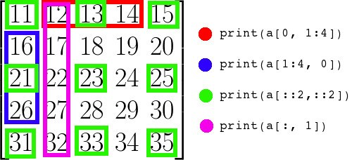
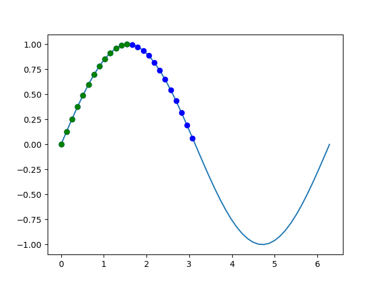

python常用库——NumPy
简介
NumPy是一个功能强大的Python库，主要用于对多维数组执行计算。NumPy这个词来源于两个单词—— Numerical和Python。NumPy提供了大量的库函数和操作，可以帮助程序员轻松地进行数值计算。这类数值计算广泛用于以下任务：
- 机器学习模型：在编写机器学习算法时，需要对矩阵进行各种数值计算。例如矩阵乘法、换位、加法等。NumPy提供了一个非常好的库，用于简单(在编写代码方面)和快速(在速度方面)计算。NumPy数组用于存储训练数据和机器学习模型的参数。
- 图像处理和计算机图形学：计算机中的图像表示为多维数字数组。NumPy成为同样情况下最自然的选择。实际上，NumPy提供了一些优秀的库函数来快速处理图像。例如，镜像图像、按特定角度旋转图像等。
- 数学任务：NumPy对于执行各种数学任务非常有用，如数值积分、微分、内插、外推等。因此，当涉及到数学任务时，它形成了一种基于Python的MATLAB的快速替代。
数组(Arrays)
NumPy围绕ndarrays展开的。它可以完成如下操作：
a = np.array([1, 2, 3]) # Create a rank 1 array
print(type(a)) # Prints "<class 'numpy.ndarray'>"
print(a.shape) # Prints "(3,)"
print(a[0], a[1], a[2]) # Prints "1 2 3"
a[0] = 5 # Change an element of the array
print(a) # Prints "[5, 2, 3]"
b = np.array([[1,2,3],[4,5,6]]) # Create a rank 2 array
print(b.shape) # Prints "(2, 3)"
print(b[0, 0], b[0, 1], b[1, 0]) # Prints "1 2 4"数组属性
可以通过ndarray类的属性获取数组属性：
# Array properties
a = np.array([[11, 12, 13, 14, 15],
[16, 17, 18, 19, 20],
[21, 22, 23, 24, 25],
[26, 27, 28 ,29, 30],
[31, 32, 33, 34, 35]])
print(type(a)) # >>><class 'numpy.ndarray'>
# 数据类型
print(a.dtype) # >>>int64
# 总数据量
print(a.size) # >>>25
# 数组形状
print(a.shape) # >>>(5, 5)
# 每项占用的字节数，这里int64占用8字节
print(a.itemsize) # >>>8
# 数组维度
print(a.ndim) # >>>2
# 所有数据消耗的字节数，小于等于数组占据的总字节数
print(a.nbytes) # >>>200数组运算
ndarray支持以下运算操作，
import numpy as np
# Basic Operators
a = np.arange(25)
a = a.reshape((5, 5))
print(a)
b = np.array([10, 62, 1, 14, 2, 56, 79, 2, 1, 45,
4, 92, 5, 55, 63, 43, 35, 6, 53, 24,
56, 3, 56, 44, 78])
b = b.reshape((5,5))
print(a + b)
print(a - b)
print(a * b)
print(a / b)
print(a ** 2)
print(a < b)
print(a > b)
print(a.dot(b))除了dot()之外，这些操作符都是对数组进行逐元素运算。比如(a, b, c) + (d, e, f)的结果就是(a+d, b+e, c+f)。它将分别对每一个元素进行配对，然后对它们进行运算。它返回的结果是一个数组。注意，当使用逻辑运算符比如 “<” 和 “>” 的时候，返回的将是一个布尔型数组。dot() 函数计算两个数组的点积。它返回的是一个标量（只有大小没有方向的一个值）而不是数组。
NumPy还提供了一些别的用于处理数组的好用的运算符。
# dot, sum, min, max, cumsum
a = np.arange(10)
print(a.sum()) # >>>45
print(a.min()) # >>>0
print(a.max()) # >>>9
print(a.cumsum()) # >>>[ 0 1 3 6 10 15 21 28 36 45]sum()、min()和max()函数的作用非常明显。将所有元素相加，找出最小和最大元素。cumsum()函数保存从第二个数开始每个数和之前所有数之和。
切片操作

花式索引
花式索引是获取数组中多个特定元素的有效方法：
# Fancy indexing
a = np.arange(0, 100)
a = a.reshape(10, 10)
indices = [1, 5, -1]
b = a[1, indices]
print(b) # >>>[11 15 19]布尔屏蔽
布尔屏蔽是根据指定的条件检索数组中的元素：
# Boolean masking
import numpy as np
import matplotlib.pyplot as plt
a = np.linspace(0, 2 * np.pi, 50)
b = np.sin(a)
plt.plot(a,b)
mask = b >= 0
plt.plot(a[mask], b[mask], 'bo')
mask = (b >= 0) & (a <= np.pi / 2)
plt.plot(a[mask], b[mask], 'go')
plt.show()之所以叫布尔屏蔽，应该是这里的mask是由布尔值组成的。结果如下图：

缺省索引
不完全索引是从多维数组的第一个维度获取索引或切片的一种方便方法。
# Incomplete Indexing
a = np.arange(0, 100, 10)
b = a[:5]
c = a[a < 50]
print(b) # >>>[ 0 10 20 30 40]
print(c) # >>>[ 0 10 20 30 40]Where 函数
where()函数分为两种情况，三个参数和单个参数。
- 三个参数
where(cond, x, y)：满足条件cond输出x，不满足输出y。 - 一个参数
where(array)：输出array中真值（非零值）的坐标。
# Where
a = np.arange(0, 100, 10)
a=a.reshape(2, 5)
print(a)
'''>>>
[[ 0 10 20 30 40]
[50 60 70 80 90]]
'''
print(a % 20 == 0)
'''>>>
[[ True False True False True]
[False True False True False]]
'''
b = np.where(a % 20 == 0)
c = np.where(a % 20 == 0)[0]
print(b) # >>>(array([0, 0, 0, 1, 1], dtype=int64), array([0, 2, 4, 1, 3], dtype=int64))
print(c) # >>>[0 0 0 1 1]广播
当维度不同的两个数组做运算时，自动将维度小的扩展成和另一个数组相同形状的处理就是广播。以下内容详情见参考[2]。
将两个数组一起广播遵循以下规则：
- 如果数组不具有相同的rank，则将较低等级数组的形状添加1，直到两个形状具有相同的长度。
- 如果两个数组在维度上具有相同的大小，或者如果其中一个数组在该维度中的大小为1，则称这两个数组在维度上是兼容的。
- 如果数组在所有维度上兼容，则可以一起广播。
- 广播之后，每个数组的行为就好像它的形状等于两个输入数组的形状的元素最大值。
- 在一个数组的大小为1且另一个数组的大小大于1的任何维度中，第一个数组的行为就像沿着该维度复制一样
import numpy as np
# Compute outer product of vectors
v = np.array([1,2,3]) # v has shape (3,)
w = np.array([4,5]) # w has shape (2,)
# To compute an outer product, we first reshape v to be a column
# vector of shape (3, 1); we can then broadcast it against w to yield
# an output of shape (3, 2), which is the outer product of v and w:
# [[ 4 5]
# [ 8 10]
# [12 15]]
print(np.reshape(v, (3, 1)) * w)
# Add a vector to each row of a matrix
x = np.array([[1,2,3], [4,5,6]])
# x has shape (2, 3) and v has shape (3,) so they broadcast to (2, 3),
# giving the following matrix:
# [[2 4 6]
# [5 7 9]]
print(x + v)
# Add a vector to each column of a matrix
# x has shape (2, 3) and w has shape (2,).
# If we transpose x then it has shape (3, 2) and can be broadcast
# against w to yield a result of shape (3, 2); transposing this result
# yields the final result of shape (2, 3) which is the matrix x with
# the vector w added to each column. Gives the following matrix:
# [[ 5 6 7]
# [ 9 10 11]]
print((x.T + w).T)
# Another solution is to reshape w to be a column vector of shape (2, 1);
# we can then broadcast it directly against x to produce the same
# output.
print(x + np.reshape(w, (2, 1)))
# Multiply a matrix by a constant:
# x has shape (2, 3). Numpy treats scalars as arrays of shape ();
# these can be broadcast together to shape (2, 3), producing the
# following array:
# [[ 2 4 6]
# [ 8 10 12]]
print(x * 2)注意：对一个array转置可以使用array.T，或者使用np.reshape()。对于矩阵可使用np.transpose()。
附录
arange()和linspace()
arange()类似于内置函数range()，通过指定开始值、终值和步长创建表示等差数列的一维数组，得到的结果数组不包含终值。
linspace()通过指定开始值、终值和元素个数创建表示等差数列的一维数组。
numpy.linspace(start, stop, num=50, endpoint=True, retstep=False, dtype=None, axis=0)- 在
start和stop之间返回均匀间隔的num个数据 endpoint控制是否包含stop点retstep控制是否返回间隔axis仅当start和stop为array时才有效，传入一维array时可取0或-1，axis = -1相当于转置
a = np.linspace(1, 5, num=5, endpoint=True, retstep=True)
print(a) # >>>(array([1., 2., 3., 4., 5.]), 1.0)
b = np.linspace([1,3,5], [1,5,7], num=5, endpoint=True, retstep=True, axis=0)
print(b)
'''>>>
(array([[1. , 1. , 1. , 1. , 1. ],
[3. , 3.5, 4. , 4.5, 5. ],
[5. , 5.5, 6. , 6.5, 7. ]]), array([0. , 0.5, 0.5]))
'''
c = np.linspace([1,3,5], [1,5,7], num=5, endpoint=True, retstep=True, axis=-1)
print(c)
'''>>>
(array([[1. , 3. , 5. ],
[1. , 3.5, 5.5],
[1. , 4. , 6. ],
[1. , 4.5, 6.5],
[1. , 5. , 7. ]]), array([0. , 0.5, 0.5]))
'''当然也可以这样用：
d = np.linspace([[1,3],[5,7]], [[1,5],[7,9]], num=5, endpoint=True, retstep=True, axis=2)多维数组的axis有些难理解，可以参考这篇，当传入n维数组时，axis=n-1与axis=-1等效。